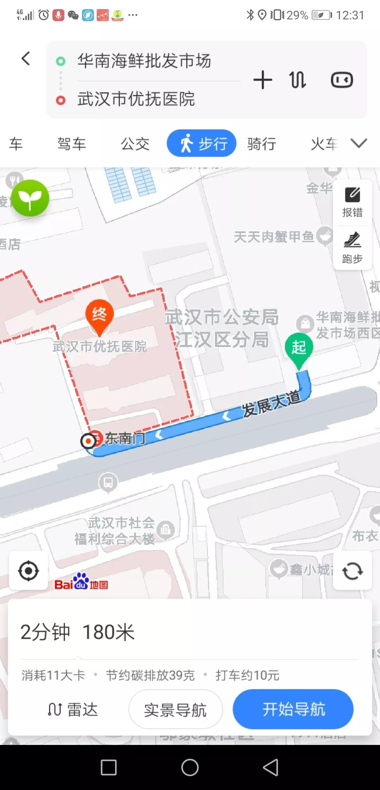
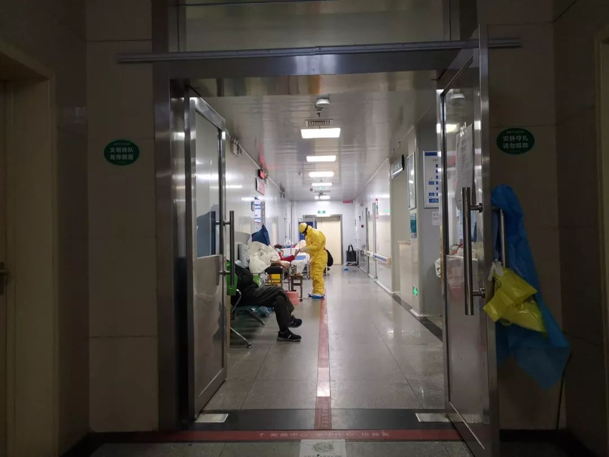
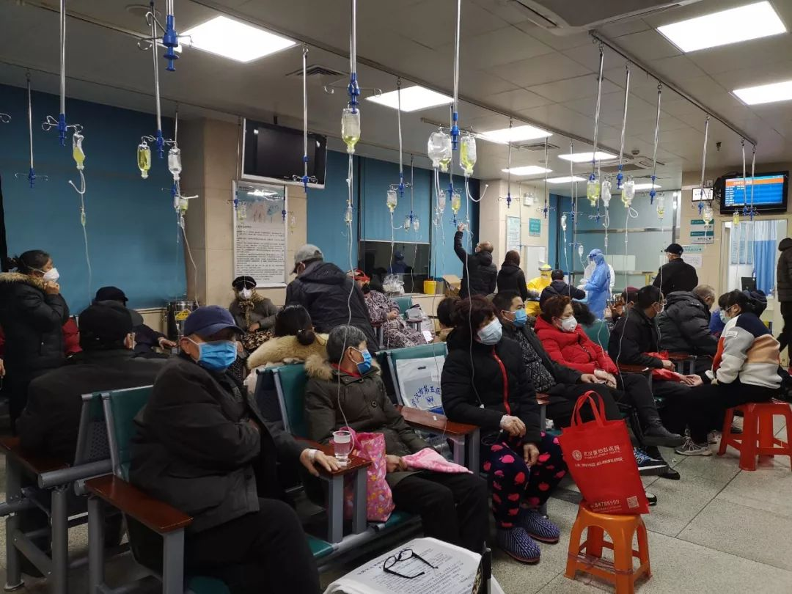

1.21-23日 武汉新冠肺炎报道（中篇）
原文链接 备份链接 1月21日下午，我们三人就住进了武汉金银潭的一家酒店，然后迅速开始了解情况。两位记者去华南海鲜市场摸情况，我一边做北京朝阳医院陶勇医生被伤事件的电话采访、赶微信稿，一边询问武汉的医生朋友。我们三人在酒店房间第一次碰面 …


优抚医院距离华南海鲜市场200米，2019年12月接诊了3名“不明原因肺炎“患者，包括后来转诊至金银潭医院的第一例确诊患者。
疫情伊始，各级疾控部门做的流行病学调查中，小医院的医生没有被重视，这很可能导致新冠肺炎早期诊断标准失误。
1月上旬，优抚医院发现医护人员和住院患者感染，但因为没有华南市场接触史，不符合诊断标准，没有上报。
1月20日，钟南山宣布新冠肺炎“人传人“，这已是10天之后。

2019年12月12日，武汉市优抚医院门诊医生刘永（化名），接诊了一位病情有点奇怪的病人。以至于近两个月后，一提起这个病人，他当时的状况，说的每一句话，刘永都记得异常清晰。
病人症状并不严重，但不像这个季节常见的流感：干咳，但不发烧，也不流鼻涕。病人说他是华南海鲜市场商户，隔壁商户的七八个员工连续几天高烧不退，干咳，整个店铺都没人上班，担心自己也被传染，于是来做检查。
现在回头看，这很可能是新冠肺炎最早的患者之一。
武汉市优抚医院，是一个以精神专科为主的二级综合医院，距离华南海鲜市场仅有200米。华南海鲜市场的2000多户商家和附近的居民，构成了来这家医院就诊人群的一部分，他们还会去附近的另一家二甲医院——武汉市红十字会医院和一家三甲医院——湖北省中西医结合医院。

△图片来源：手机截图
十二月中旬，这三家医院就开始陆续发现有一些和以往季节性流感症状不一样的病人：不少人并无发热，只是干咳，肺部却有显著病变。
小医院的发热门诊无法确诊这些病例，医生建议他们转往另外的医院。12月27日，在武汉金银潭医院被确诊的、最早的新冠肺炎病人之一，就来自优抚医院的转诊。
多数不发烧的病人，不会第一时间选择去武汉当地医疗资源最强大的协和、同济、中南、人民等四大医院，往往先去小诊所，或者二级医院。而四大医院接诊的病人，大多是在辗转诊所、二级医院之后，高烧不退、有严重肺炎症状的病人。
这意味着，这些小医院，反倒是早于大医院最早接触新冠肺炎病人的医院。
一些在这些医院工作的医生，敏锐地发现了这类病例的异常。但在疫情确定伊始，各级疾控部门做的流行病学调查和访谈中，这些医生却没有被重视，这很可能是导致新冠肺炎早期诊断标准失误的重要原因。
“疾控部门应该重视我们这些一线临床医生，尤其在新型流行病出现时。”上述医院一位医生感叹。

△武汉一家医院急诊室，吴靖摄
最早一批病人：不一定发烧，
不一定有华南海鲜市场接触史
12月12日那天刘永值班，来门诊看病的人不如以往多，一位69岁的病人黄某，主动来门诊咨询。
刘永研究过传染病学，黄某说“隔壁七八个员工突然发烧“，一下子让他开始警惕，建议病人做一个CT检查一下。黄某觉得自己的症状不严重，坚决不做——这符合很多人的想法，海鲜市场的部分商户，平时习惯在小诊所和小医院看病，不愿意花钱做自己觉得没必要的检查。
既然不愿意检查，刘永建议去附近的武汉红十字医院或新华医院去看看。因为这两家医院有一年四季都开的发热门诊，防护设施比优抚医院高级。刘永感觉到这可能是一种传染性很强的疾病。他担心，优抚医院简易的门诊设施，完全抵挡不住烈性比较强的传染病。
刘永的警觉来自高中时的经历。当年他家乡的村民得过出血热，一开始被误认为是上呼吸道感染，按照普通感冒治疗，很多人去世，此后，他就非常关注传染病。他不敢确定病毒百分之百来自华南海鲜市场，但结合黄某所言，至少意味着这类病例可能会在华南海鲜市场突然、集中爆发。
第二天（12月13日）是一个星期五，一上班刘永就提醒同事，只要是华南海鲜市场来看病的人，每个人都免费提供一个普通外科口罩。同时他建议放射科和门诊科的所有医生全部戴口罩。
12月16日，另一个病例出现了。刘永的同事接诊了一位总是来华南海鲜市场进货的湖北荆州市人。这位男性患者70岁，已经发烧好几天，症状是干呕。当天，做了血常规检查，没有异常，当时判断是上呼吸道感染，同事担心是流感，开了专治流感的药物奥司他韦。他在优抚医院输液2天后，症状还是不见好转。医生建议他做一个CT，他觉得213元一个CT不值得，拒绝了，只做了一个79元的胸片，但胸片看不出有什么异常。
医生建议这位病人转院到武汉红十字医院。八点健闻后来联系到这位患者，他在武汉红十字医院被诊断为肺部感染，住了7天院，还是没见好转。12 月 24 日，他去了同济医院办理住院，后被确诊为新冠肺炎，1月23号武汉封城前治愈，已回到荆州家中。
武汉市卫健委2020年1月5日发布的关于不明原因肺炎情况通报中，根据当时开展的病例搜索和回顾性调查工作，最早发病的患者病例，和这位患者的发病时间接近。
优抚医院的医生在讨论过后，确定了这种“不像普通流感”病人的检查方案，常规的血常规检查和胸片并检查不出异常，必须做CT。从这例患者开始，优抚医院的门诊医生们形成了共识：患者如果不做CT，医生就不给做诊断。
12月27日，第三个类似情况的患者出现。他没有发热，只是咳嗽，他常年在华南海鲜市场采购货物，因为看到周围的许多商户发热，内心有些恐惧，自己主动来做体检。即便他没有发烧，优抚医院的医生按照刚讨论的原则给他做了CT，却发现这个当时不发热的病人，肺部有严重异常，诊断为“肺炎”，并建议他住院治疗，治疗两天后，12月29日，医生让他转诊到武汉金银潭医院。这个病人，成为武汉金银潭医院有了核酸检测后，首批被确诊的病人之一。
接诊过这三例患者之后，优抚医院的医生感觉不简单，自己医院并不能解决。他们内部决定再遇到这种患者，第一时间建议转诊到更高级别的医院。
与此同时，优抚医院附近的湖北省中西医结合医院医生张继先也发现了此类病例。据媒体报道，2019年12月26日，一对家住医院附近小区的老两口因发烧、咳嗽来中西医结合医院看病，拍出来的胸部CT片，呈现出与其他病毒性肺炎完全不同的改变。张继先让老两口叫来他们的儿子也做下检查，没有任何症状的儿子，CT一照，肺上也有那种表现了。
第二天，她把这三个人的情况，和另外一个来自华南海鲜市场的类似病例，向医院作了汇报，医院立即上报给江汉区疾控中心。张继先成为这次武汉新冠疫情中病例上报第一人。
据这几位优抚医院最早接触新冠肺炎病人的临床医生观察：发热不是这种新型肺炎的必要表现；张继先发现，也不是所有的病例都有华南海鲜市场接触史。

△武汉一家医院的输液室，吴靖摄
1月上旬，“人传人”现象已经存在
12月31日，武汉卫健委首次向公众发出“不明原因肺炎”疫情公告。国家卫健委派了一批专家来到武汉，对武汉金银潭医院调研，随后制定了不明原因肺炎病例上报的三个标准，1、有华南海鲜市场接触史；2，发热； 3、CT，排除支原体、衣原体等其它感染。
之前一天，武汉市卫健委医政医管部门发了一个通知，华南海鲜市场陆续出现不明原因肺炎病人，立即清查一周内接诊过的不明原因肺炎病人。
据刘永回忆，首批去金银潭的病人，应该有一部分是从离华南海鲜市场最近的这三家医院转入的，大多有华南海鲜市场接触史。等转入到金银潭医院后，病情可能已经发展了一段时间，这可能会影响专家们的判断。
与此同时，一位医生回忆，武汉卫健委向各大医院内部传达了几个信息：1，不是非典；2，不会人传人；3，不会死病人；4，不会让医护人员感染。以至于12月31日封闭华南海鲜市场后，一些医院内部在议论：觉得有点太夸张，小题大做。
然而，后来发生的事情让他们很震惊。
2020年1月上旬，不明原因肺炎已经被命名为新型冠状病毒肺炎，而即使优抚医院的医生们遇到这类病例都建议转诊，但院内的部分医护人员和第一病区、第三病区住院的精神病患者，却出现了集中发热、干咳的症状。
住院的精神病患者并无直接的华南海鲜市场暴露史。医生会诊后，结合之前12月份在优抚医院初诊，转诊到其它医院后被确诊为新冠肺炎的病人都有华南海鲜市场的接触史的例子，认为医院离华南海鲜市场太近，一些患者家属在探望住院病人时，带进了病毒。这意味着病毒“人传人”现象是存在的。
当时医院没有核酸检测试纸，不知道是不是冠状病毒。但按照之前专家们给出的疑似病例的三个诊断标准，这类集中爆发的发热病人，大部分并无华南海鲜市场接触史，因此，他们当时并未按不明原因肺炎上报这些病例。
现在回头看，有关疑似病例上报的上述三个标准并不合理，很多病人没有华南市场接触史，也有很多病人门诊时没有发热。据钟南山院士团队的最新研究论文，对全国31个省市552家医院的1099名新冠肺炎确诊患者的研究结果表明，就诊时出现发热症状的患者的比例为43.8％，但在住院后发生发热的比例为87.9％，发生严重肺炎的比例为15.7％。
1月初，优抚医院的一个科室主任被确诊为新冠肺炎。他去武汉市中心医院住院治疗，主动要求隔离治疗，最后情况严重转去金银潭医院。
同一时期，因“在互联网上发布不实言论”，一批医护人员被武汉市公安局警示和通报，这一消息传到了优抚医院的冯云（化名）主任耳里。
几件事情集合到一起，冯云感到不对劲，于是去发热门诊、检验科和放射科各个科室搜集资料，和院领导商议后，打算邀请另一个医院的主任来汇总、分析这些病例。
1月17日上午，另一个医院的主任会诊后，得出判断，是病毒性肺炎，不是细菌性肺炎。这也符合当初刘永的判断：“细菌性肺炎短期内不可能传播那么快，应该是病毒性肺炎。”
1月17日那天正是小年，本来医院内部要办个春节联欢会，临时决定把下午的活动取消，开始建隔离病房。
上报机制不畅，钟南山宣布“人传人“已是10天后
虽然因为住院患者的病例不符合疾控中心最初制定的三个标准，没有按不明原因肺炎上报，但医院依旧在1月10号左右将这种医院医护人员和病人集中发热的情况告诉给了上级疾控部门。
据一位优抚医院医生回忆，当时上级疾控部门没有马上来医院进行调研，而是反问他们：“你们没有接触过华南海鲜市场，为什么有这个病？”优抚医院将最初内科医生接诊的三个病例反馈给上级疾控部门，后者既不肯定也不否定。
1月12日，疾控部门开始给各大医院下发文件和表格，要求医院上报门诊发热情况。起初要求每天下午四点前上报，后来逐渐改成晚上8—10点之间上报。
1月17日，上报新冠肺炎疑似病例的标准放宽，并不要求一定要有华南海鲜市场接触史。优抚医院开始向疾控部门上报大量的病例，一下子上报了 30个发热病人。
1月18日，国家卫健委高级专家组成员再次来武汉调研，这次的调研对象包括中南医院、人民医院等四大医院的专家，调研中，四大医院报告了医护人员的感染情况，并再次提出了降低疑似病例诊断标准的要求。
1月18号，疾控部门给医院发放的上报表格中增加了医护人员的感染病例一项。
1月20日，国务院高级别专家组组长钟南山，指出新冠病毒“人传人”。此时，距离优抚医院发现医护人员和住院患者感染的情况，已经过去了10天。
1月20日之后，武汉当地的确诊病例和疑似病例急剧上涨，确诊人数由一个月前宣布的41例，涨至2月10日近两万例。疫情因为人传人也扩展到其它地区，全国确诊人数已超4万。
优抚医院医生们感到庆幸的是，现在只有16名医务人员感染，在武汉各大医院的医务人员感染情况中，算相对较轻的。而12月中旬就开始做好防护措施四名放射科医生，没有一人被感染。此外，虽然还有86个确诊和疑似病人转不出去，因为有相当一部分是精神病人，没有医院愿意接收。但这部分病人，很早就被安置在医院的一所新建的大楼隔离。
2月7日，优抚医院的相关医生，被疾控部门约谈。疾控部门认为他们在12月底、1月初时，漏报少报病例。这位医生反对：“卫健委要求同时具备三个条件才能上报，当时确实不符合这三个条件。”
“如果当时重视我们这些疫情集中区的小医院，相信我们临床医生的报告和判断，也许情况不会发展到现在这样。”一位医生感叹。
吴靖|撰稿
微信号：1136352312
王晨|统筹、撰稿
微信号：2174127
王吉陆|责编
微信号：wangjilu006

我们尊重原创版权，未经允许请勿转载。
授权转载
郑琪 微信号: 1281949389
商务合作
上海：leslee 13916263824
北京：Jessie 13911125922
线索爆料、意见反馈，加入核心读者社群
请扫码联系健闻君

让朋友们看到你也在看
↓↓↓
原文链接 备份链接 1月21日下午，我们三人就住进了武汉金银潭的一家酒店，然后迅速开始了解情况。两位记者去华南海鲜市场摸情况，我一边做北京朝阳医院陶勇医生被伤事件的电话采访、赶微信稿，一边询问武汉的医生朋友。我们三人在酒店房间第一次碰面 …
原文链接 备份链接 杨晨还在等通知。他在等待“十号令”带给他以及他的家庭命运的转机，他是一位“武汉病人”的家属。 让他有所期许的“十号令”，是2月2日发出的。按照“十号令”的要求，自通告发布之日起，对全市经发热门诊诊断有肺炎症状的发热病人 …
原文链接 备份链接 2月1日，西藏自治区第三人民医院医生土旦朗杰观看病人胸片。目前，西藏唯一一例确诊的新型冠状病毒感染的肺炎患者在此住院治疗。觉果/摄 新华社CNML图片 作者 杨海 编辑 从玉华 李亮是武汉某三甲医院的病房主任，从1月 …
原文链接 备份链接 1月23日凌晨2点“交通封城”令公布时，张奇还在刷手机。 张奇是北京人。1月20日，他坐高铁到武汉来探望朋友。此前媒体已经零星有了关于武汉新冠肺炎的报道，而病例数据在20日急速增加了2倍，危重患者已经有44人。不 …
原文链接 备份链接 1月28日下午三时，中国青年报·中国青年网记者实地探访武汉市第五医院输液室。 本文约4534字 预计阅读时间12分钟 中青报·中青网记者 王嘉兴 这是一位坚守在抗击新型肺炎一线医生的自述。她经历了疫情初期所在医院的 …